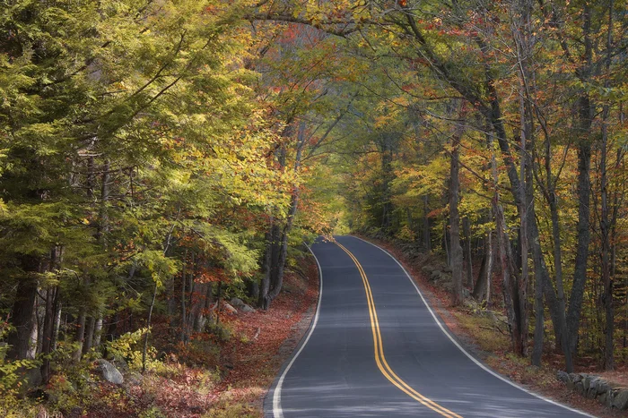
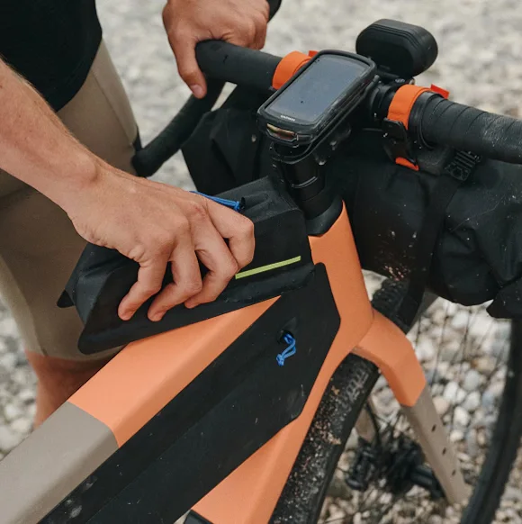
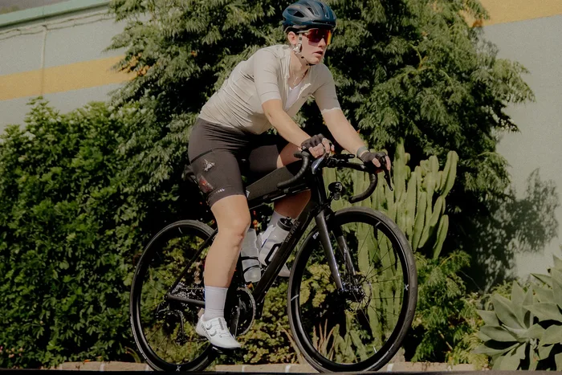

Fra nysgerrig
til første tur.
Her får du en enkel og overskuelig guide til at komme i gang med landevejscykling. Vi tager dig trin for trin – uden kompliceret jargon.
Din vej til første tur
4 enkle trin


